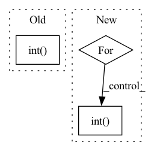

Pattern ID :3080
Before Change
num_pos = min(num_pos, (reg_overlap > 0).sum())
pos_mask = torch.topk(reg_overlap, num_pos, largest=True)[1]
reg_overlap[pos_mask] += 3.0
num_pos = max(1, torch.topk(pred_classif, topk, largest=True)[0].sum().int() )
num_pos = min(num_pos, (pred_classif > 0).sum())
pos_mask = torch.topk(pred_classif, num_pos, largest=True)[1]
pred_classif[pos_mask] += 3.0After Change
* torch.exp(classif.sigmoid().t()[labels, :] / sigma)
).clamp_(max=1)
qualities[qualities != qualities.max(dim=0, keepdim=True)[0]] = 0.0
for quality in qualities:
num_pos = max(1, torch.topk(quality, topk, largest=True)[0].sum().int() )
num_pos = min(num_pos, (quality > 0).sum())
pos_mask = torch.topk(quality, num_pos, largest=True)[1]
quality[pos_mask] += 3.0In pattern: SUPERPATTERN
Frequency: 3
Non-data size: 3
Instances Fragment ID: 11930650
Project Name: zhanghengdev/mutualguide
Commit Name: e34b6b0002f1571fad0fa9bf00707f377f5fc431
Time: 2022-07-01
Author: zhanghengdev@outlook.com
File Name: utils/box/box_utils.py
M Class Name: AnonimousClass
N Class Name: AnonimousClass
M Method Name: mutual_match(12)
N Method Name: mutual_match(12)
M Parent Class:
N Parent Class:
M File Name: utils/box/box_utils.py
N File Name: utils/box/box_utils.py
M Start Line: 79
M End Line: 99
N Start Line: 97
N End Line: 118
Before Change
def test_epoch(self, test_iterable_ds):
for _, (X, y) in enumerate(test_iterable_ds):
X = X.to(self.device)
y = y.to(self.device).int()
pred = self.model(X)
[fn(pred, y) for fn in self.metric_fns]
result = {type(fn).__name__: fn.compute().item() for fn in self.metric_fns}
[fn.reset() for fn in self.metric_fns]After Change
y = y.to(self.device)
num_batches += 1
pred = self.model(X)
for fn in self.metric_fns:
if get_package_name(fn) == "torchmetrics":
fn(pred, y.int() )
elif get_package_name(fn) == "sklearn":
if type(fn).__name__ not in sklearn_intermediates:
sklearn_intermediates[fn.__name__] = 0 Fragment ID: 11930648
Project Name: ryantd/veloce
Commit Name: aca7bbb15fbcbae885dd418e7ff969ad4828703e
Time: 2022-01-04
Author: xiaoyu.zhai@hotmail.com
File Name: phetware/epochvisor.py
M Class Name: Epochvisor
N Class Name: Epochvisor
M Method Name: test_epoch(2)
N Method Name: test_epoch(2)
M Parent Class: object
N Parent Class: object
M File Name: phetware/epochvisor.py
N File Name: phetware/epochvisor.py
M Start Line: 126
M End Line: 133
N Start Line: 128
N End Line: 154
Before Change
num_pos = min(num_pos, (reg_overlap > 0).sum())
pos_mask = torch.topk(reg_overlap, num_pos, largest=True)[1]
reg_overlap[pos_mask] += 3.0
num_pos = max(1, torch.topk(pred_classif, topk, largest=True)[0].sum().int() )
num_pos = min(num_pos, (pred_classif > 0).sum())
pos_mask = torch.topk(pred_classif, num_pos, largest=True)[1]
pred_classif[pos_mask] += 3.0After Change
* torch.exp(classif.sigmoid().t()[labels, :] / sigma)
).clamp_(max=1)
qualities[qualities != qualities.max(dim=0, keepdim=True)[0]] = 0.0
for quality in qualities:
num_pos = max(1, torch.topk(quality, topk, largest=True)[0].sum().int() )
num_pos = min(num_pos, (quality > 0).sum())
pos_mask = torch.topk(quality, num_pos, largest=True)[1]
quality[pos_mask] += 3.0 Fragment ID: 11930649
Project Name: zhangheng19931123/mutualguide
Commit Name: e34b6b0002f1571fad0fa9bf00707f377f5fc431
Time: 2022-07-01
Author: zhanghengdev@outlook.com
File Name: utils/box/box_utils.py
M Class Name: AnonimousClass
N Class Name: AnonimousClass
M Method Name: mutual_match(12)
N Method Name: mutual_match(12)
M Parent Class:
N Parent Class:
M File Name: utils/box/box_utils.py
N File Name: utils/box/box_utils.py
M Start Line: 79
M End Line: 99
N Start Line: 97
N End Line: 118